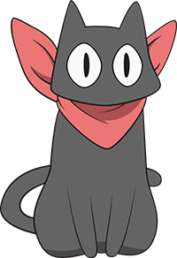

Welcome to Ani-Neko
Ani stands for anime and Neko means cat! Ani-Neko is a website to introduce the Japanese Otaku media to the general public.
Links
There are a lot of sources to learn more and experience otaku media.
News
Live feed from the popular Anime New Network
Now
List of the Current running anime and manga.
Reccomendations
Recomendation from our Ani-Neko staff.